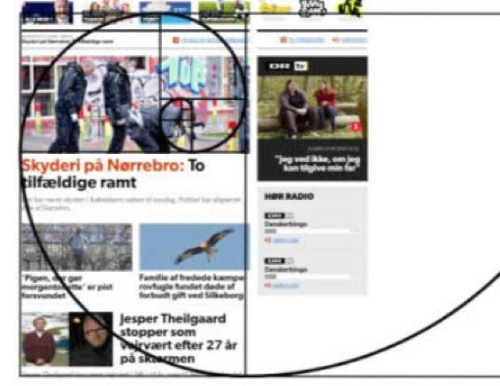

Er når nogle individuelle elementer ikke forstiller noget hver for sig,
men vores hjerner sætter komponenterne sammen så det skaber et sammenhængende billede.
Figure er hvor forgrunden er det der er fokuspunktet, det som beskueren skal rette sine øjne på.
Ground som er baggrund er mindre vigtig, og det skal være nemt at skelne mellem figure og ground.
Man sætter nogle elementer tæt på hinanden, så det kan opfattes og ses som en helhed.
For at det skal kunne lade sig gøre, skal elementerne ikke stå for langt fra hinanden, og omgivelserne skal også være relateret til helheden.
Man bliver ledet gennem et objekt,
så man ikke får behovet for at kigge væk før man har set hele objektet.
Man deler billedet ind I 9 lige store felter, ved at lave 2 vandrette og 2 lodrette linjer.
Hermed opstår der 4 skæringspunkter, hvor man lægger fokus, når man ser billedet. Det skaber ro og balance.
Closure overlader dele af designet til beskuerens ønske om at fuldende designet, så det skaber et helt billede.
Det overlader dele af designet til fantasien og på den måde skal man selv udfylde de manglende prikker.
Symmetri skaber ro, harmoni og overblik. Elementerne er typisk ens eller har noget til fælles for at være symmetriske.
Spejlet symmetri er når elementerne er spejlet overfor hinanden.
Rotativ symmetri er når elementer bliver roteret i forhold til hinanden, ofte med et fælles punkt i centrum.
Translativ symmetri er når ens elementer er placeret i forskellige steder i kompositionen.
White space kan være alle farver samt baggrundsbilleder, det er alt det der ligger bag indholdet.
Det er med til at skabe fokus på det vigtige på en side.
Er en spiral, der ligner et sneglehus og leder beskuerens øjne hen mod det mest vigtigste i billedet eller på siden.
Er et usynligt gitter, der opdeler siden i forskellige sektioner både lodret og vandret.
Det gør siden mere overskuelig og gør det mindre rodet at se på. Grid er et godt hjælpemiddel til organisering af siden.